flowchart LR A["Far Wall<br>(~26 cm)"] B["Normal Readings<br>26 cm $\to$ 16.25 cm"] C["**BAD SENSOR READINGS** <br> Typically 16.25 cm or <br> 17.25 cm readings <br> 16.25 cm $\to$ 10.25 cm"] D["Normal Readings<br>10.25 cm $\to$ 0 cm"] E["Sensor<br>(0 cm)"] A --> B --> C --> D --> E style B fill:#b6f2b6,stroke:#222,stroke-width:2px style C fill:#ffb3b3,stroke:#222,stroke-width:3px style D fill:#b6f2b6,stroke:#222,stroke-width:2px
PID Ball Balance Beam
Closed-Loop Control Using PD & PID Feedback
1 Overview
This project implements two different closed-loop balancing systems using an Arduino, ultrasonic sensor, and servo motor to stabilize/center objects on a beam.
Two different controller implementations were developed:
- A Ball Balancing System
- A Block Balancing System
The first system uses PD-based and second uses PID-based feedback control. Both use filtered ultrasonic sensor measurements to continuously adjust beam angle and stabilize the object near the center of the beam.
2 Final Systems
2.1 Ball Balancing System
There was a region of unusable distance readings near the center of the beam so a slightly offset center was chosen. An explanation of this can be found in section 4 - Major System Limitation.
2.2 Block Balancing System
Theres was lots of friction with this version. There was much more friction moving toward the sensor than away from it.
2.3 Individual 3D Printed Components
2.4 STL Files
2.5 Full CAD Assembly
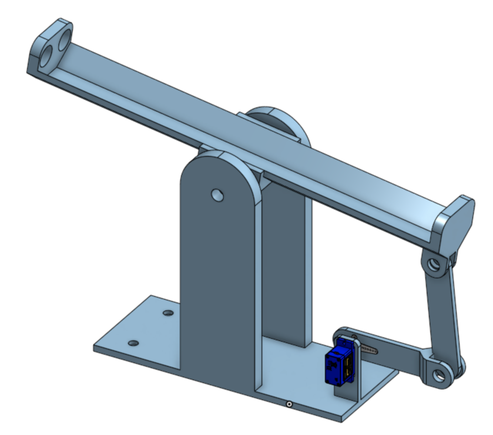
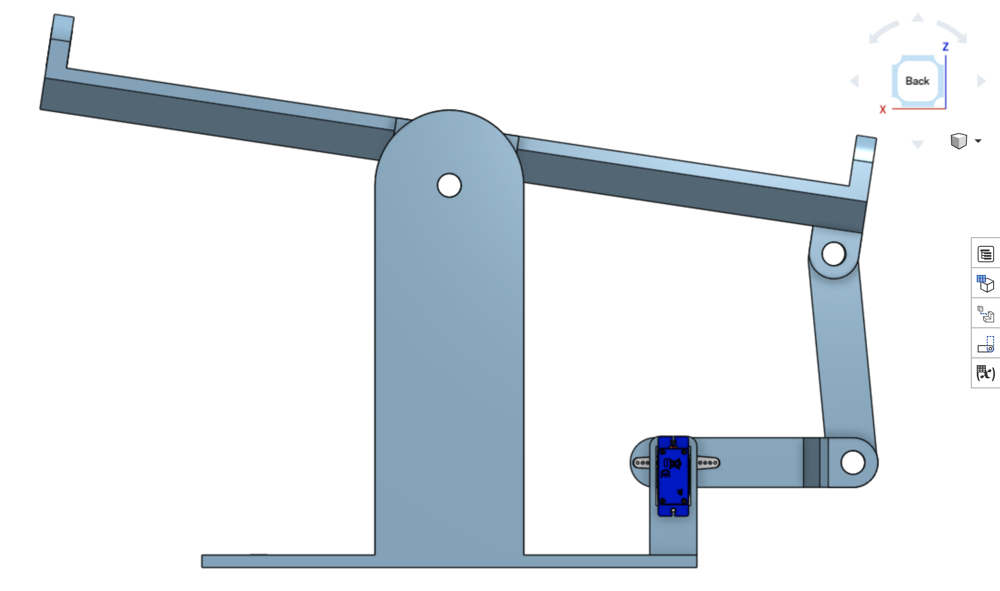
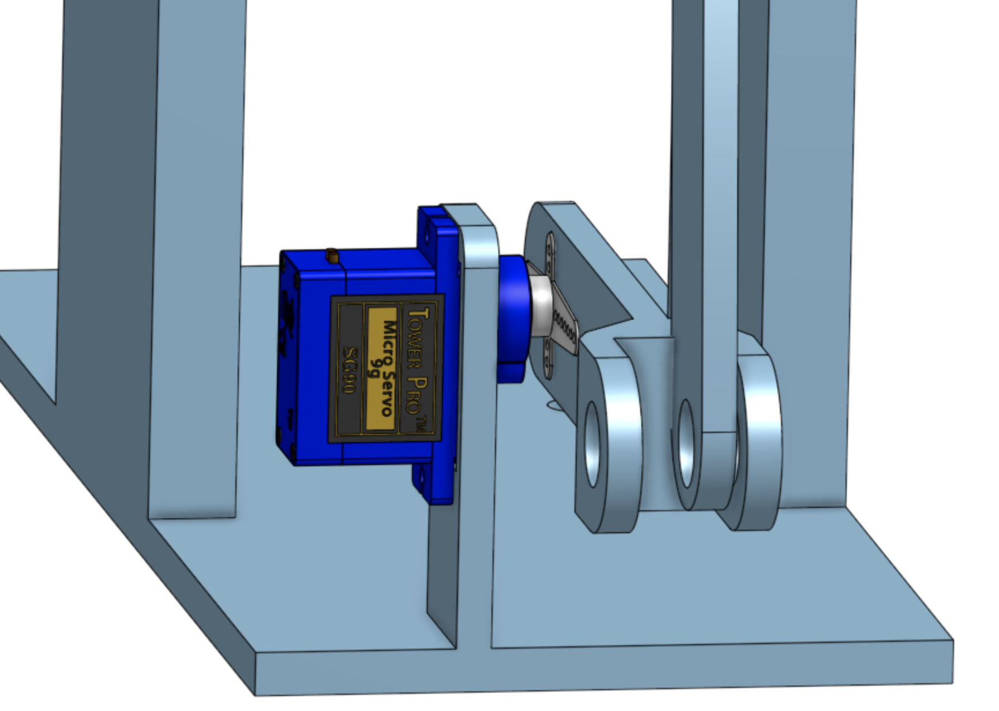
2.5.1 Base
Includes Servo connector and holes for glueing standoffs
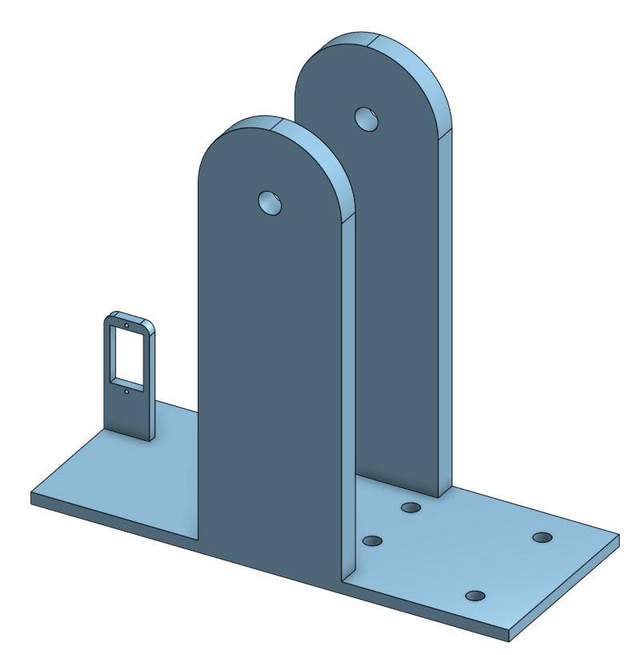
2.5.2 Beam
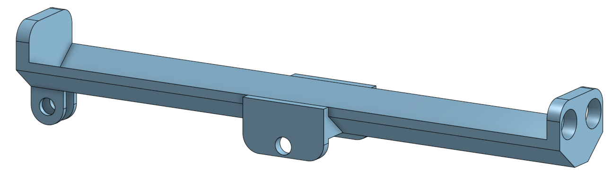
2.5.3 Servo Arm Connector Extension
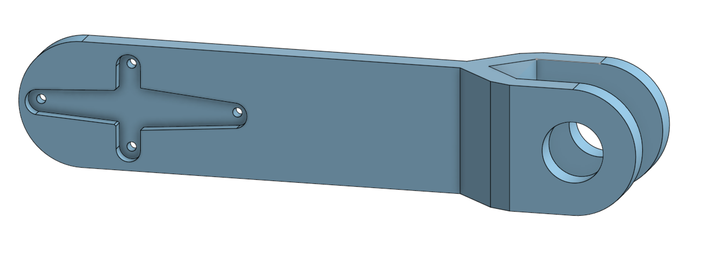
2.5.4 Servo Extender to Beam Connector
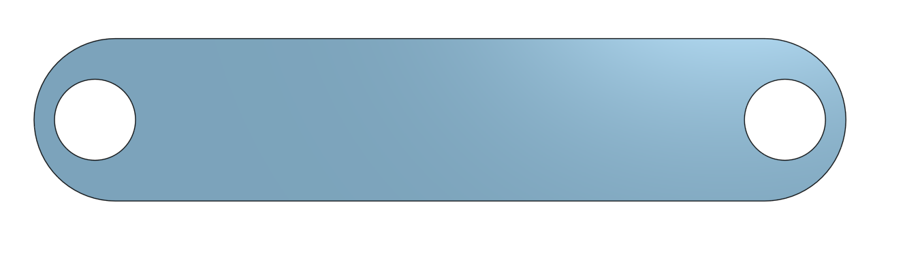
2.6 Other Components
2.6.1 3/8 Steel Rod
3 segments cut to:
- 80 cm
- 20 cm
- 15 cm
Inserted through plastic holes and used as pivots
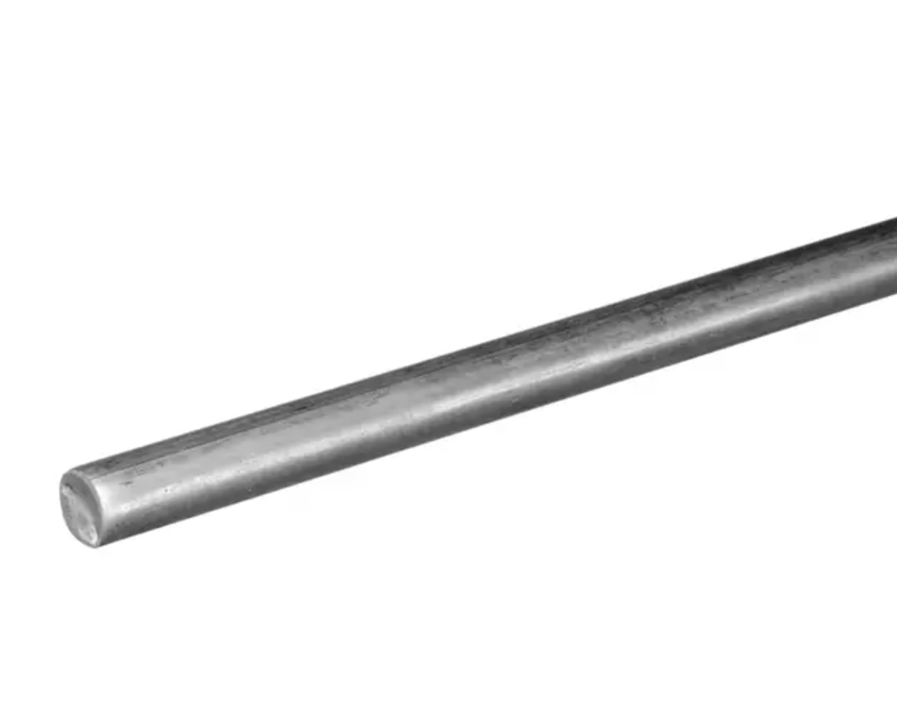
2.6.2 Servo Motor & Arm
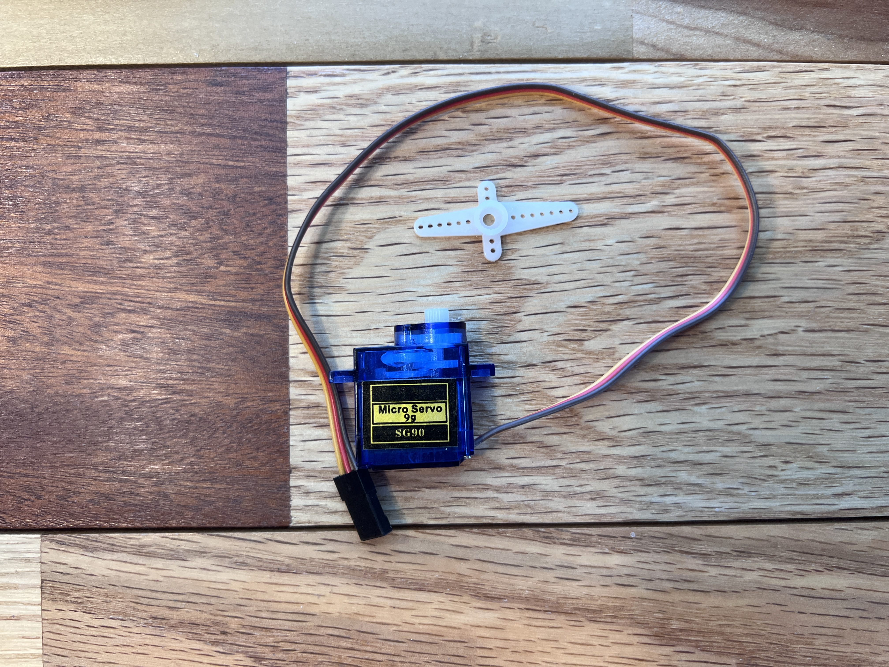
2.6.3 Ultrasonic Sensor
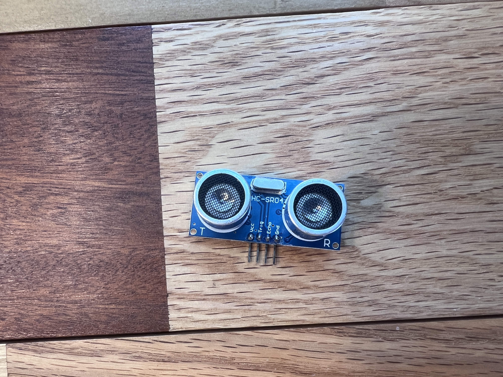
2.6.4 Arduino Uno & Breadboard
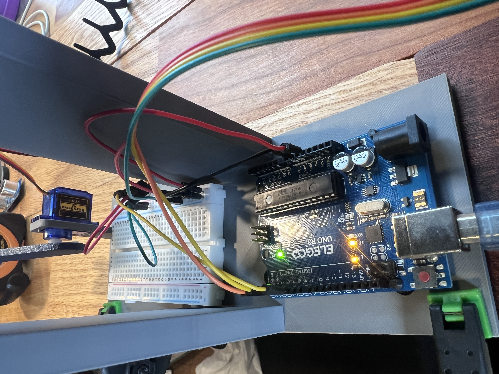
2.6.5 Standoff Screws & Nuts (M3*6+6) & (M3)
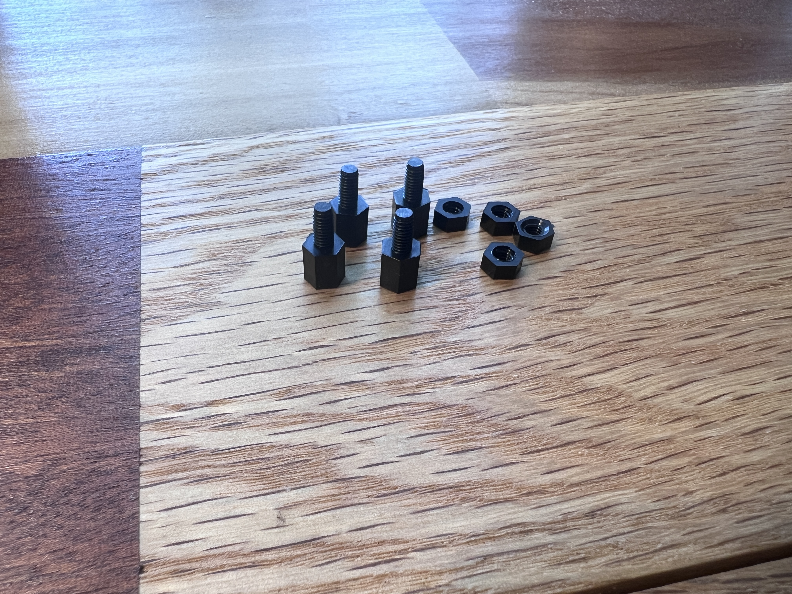
2.7 Pin Connections
- Arduino Uno
- USB \(\to\) Computer
- GND \(\to\) Common Breadboard Ground
- 5V \(\to\) Common Breadboard Power
- HC-SR04 Ultrasonic Sensor
- VCC \(\to\) 5V
- GND \(\to\) GND
- TRIG \(\to\) D2
- ECHO \(\to\) D3
- Servo Motor
- Signal Wire \(\to\) D5
- Power (Red) \(\to\) 5V
- Ground (Brown/Black) \(\to\) GND
3 Major System Limitation
The largest limitation encountered in the project was the behavior of the ultrasonic sensor when the stress ball was near the center of the beam.
A sketch was made specifically to output the ultrasonic sensors filtered distance measurements (3 sample median filter). The sensor behaved normally until the ball approached the center region of the beam.
At approximately 16.25 cm (2.5–3 cm away from the center position on the non-sensor side), the measured readings became inaccurate and unusable.
For example:
- The ball would approach the center normally from the far end to about 16.25 cm away from the sensor.
- After 16.25 cm, as the ball moved slightly closer to center, the measured destance would increase to about 17.25cm
- Additional movement toward center produced repeated inaccurate readings of either 16.25 or 17.25cm with occasional readings in the 20–30 cm range
- Once the ball crossed a threshold point at about 10.25 cm away from the sensor, the measured value would suddenly drop back to realistic values.
- The readings would remain accurate from 10.25 cm until the ball touched the sensor.
This created a large “dead zone” where the ultrasonic readings did not correspond to the true ball position.
The issue was especially problematic because the objective of a PID ball balancing system is to stabilize the ball precisely at the center of the beam.
As a workaround, A new “Center” value of 16.25 cm was chosen to avoid the center being in the “Bad Sensor Readings” region.
- Actual beam center: approximately 12.5 cm (16 cm center - 3.5 cm ball radius)
- Actual center value used: 16.26 cm
flowchart LR A["Far Wall<br>(~26 cm)"] B["Normal Readings<br>26 cm $\to$ 16.25 cm"] C["**NEW CENTER** <br> Right Before Bad Sensor Readings Zone<br>16.26 cm"] D["**BAD SENSOR READINGS** <br> Typically 16.25 cm or <br> 17.25 cm readings <br> 16.25 cm $\to$ 10.25 cm"] E["Normal Readings<br>10.25 cm $\to$ 0 cm"] F["Sensor<br>(0 cm)"] A --> B --> C --> D --> E --> F style B fill:#b6f2b6,stroke:#222,stroke-width:2px style C fill:#fff2a8,stroke:#222,stroke-width:2px style D fill:#ffb3b3,stroke:#222,stroke-width:3px style E fill:#b6f2b6,stroke:#222,stroke-width:2px
This allowed the system to balance reliably despite the sensor limitations, but at a position not directly in the center of the beam
The problem most likely originates from:
- Ultrasonic Sensor Inaccuracies
- Reflection angle changes near beam center
- Ball curvature
- Noise reflections from Base/Beam Bodies
4 Ball Balancing Code
The ball balancing implementation uses a PD controller with filtering, gain scheduling, and servo rate limiting.
4.1 Full Ball Balancing Code
/* Ball on Beam PD Balancer
by Jacob Maier
Description:
This program centers a 3.5cm radius Stress Ball I got from my school on a beam. It
uses an ultrasonic sensor to detect ball distance, and a servo to change the beam angle.
The physical system was 3D printed for accuracy and controllability.
Important note:
This code centers the ball slightly to the non sensor side of center. See website for why
this was done.*/
#include <Servo.h> // Arduino servo library
Servo servo; // Create servo object
#define trig 2 // Ultrasonic trigger pin
#define echo 3 // Ultrasonic echo pin
#define servoPin 5 // Servo signal pin
// ==========================================================
// SERVO
// ==========================================================
const int SERVO_CENTER = 90; // Beam level angle
const int SERVO_MIN = 70; // Set the min angle (-20)
const int SERVO_MAX = 110; // Set the max angle (+20)
const float MAX_SERVO_STEP = 4.0; // Maximum servo movement per loop
const int HOLD_DISTANCE = 2.50; // Allowed position error for HOLD mode
const int HOLD_VELOCITY = 5.5; // Allowed velocity for HOLD mode
// ==========================================================
// SERVO ASYMMETRY COMPENSATION
// ==========================================================
const float BELOW_CENTER_SCALE = 0.80; // Compress servo angle change below center
const float ABOVE_CENTER_SCALE = 1.00; // Keep normal scaling above center
// ==========================================================
// CENTER
// ==========================================================
// actual physical beam center
const float CENTER_CM = 16.26; // Physical beam center in cm
// old compensation center
//const float CENTER_CM = 15.7;
// ==========================================================
// PD
// ==========================================================
// const float KP = 1.85;
// const float KD = 1.05;
const float KP = 1.85; // Proportional gain
const float KD = 1.05; // Derivative gain
// ==========================================================
// FILTERING
// ==========================================================
float filteredPos = CENTER_CM; // Initialize filtered position to center cm
float previousPos = CENTER_CM; // Initialize previous position to center cm
float filteredVelocity = 0; // Initialize filtered velocity to 0
float servoCommand = SERVO_CENTER; // Initialize servo command to center angle
float lastRaw = CENTER_CM; // Initialize previous raw reading to center cm
unsigned long lastTime = 0; // Initialize timing variable
// ==========================================================
void setup()
{
pinMode(trig, OUTPUT); // Set ultrasonic trig pin as output
pinMode(echo, INPUT); // Set ultrasonic echo pin as input
servo.attach(servoPin); // Attach servo to signal pin
Serial.begin(9600); // Start serial monitor at baud rate 9600
servo.write(SERVO_CENTER); // Move servo to center angle
delay(1000); // Delay 1 second for startup stabilization
lastTime = millis(); // Start timing reference
}
// ==========================================================
void loop()
{
controlBall(); // Main ball balancing control function
delay(18); // Main loop delay
}
// ==========================================================
// ULTRASONIC
// ==========================================================
float distanceCM()
{
digitalWrite(trig, LOW); // Stop ultrasonic pulse
delayMicroseconds(3); // Small delay before trigger
digitalWrite(trig, HIGH); // Send ultrasonic pulse
delayMicroseconds(10); // 10 microsecond pulse
digitalWrite(trig, LOW); // Stop ultrasonic pulse
unsigned long duration = pulseIn(echo, HIGH, 18000); // Measure return pulse duration
if (duration == 0) // If timeout occurs
{
return -1; // Return invalid reading
}
return duration / 58.0; // Convert pulse duration to cm
}
// ==========================================================
// MEDIAN FILTER
// ==========================================================
float readDistance()
{
float a = distanceCM(); // First sensor reading
delay(2); // Small spacing delay
float b = distanceCM(); // Second sensor reading
delay(2); // Small spacing delay
float c = distanceCM(); // Third sensor reading
if ((a <= b && b <= c) || (c <= b && b <= a)) // If second reading is median
{
return b; // Return middle value
}
if ((b <= a && a <= c) || (c <= a && a <= b)) // If first reading is median
{
return a; // Return middle value
}
return c; // Otherwise c is the median
}
// ==========================================================
// MAIN CONTROL
// ==========================================================
void controlBall()
{
float raw = readDistance(); // Get median filtered ultrasonic reading
if (raw < 2 || raw > 50) // Reject impossible readings
{
servo.write(SERVO_CENTER); // Set servo angle to center angle
return; // Exit control loop
}
// ========================================================
// SPIKE LIMITER
// ========================================================
float deltaRaw = raw - lastRaw; // Calculate change in sensor reading
deltaRaw = constrain(deltaRaw, -2.0, 2.0); // Limit maximum reading jump per loop
raw = lastRaw + deltaRaw; // Apply constrained reading change
lastRaw = raw; // Save filtered raw value
// ========================================================
// POSITION FILTER
// ========================================================
filteredPos = filteredPos * 0.3 + raw * 0.7; // Low pass filter / exponential moving average
// ========================================================
// CHANGE IN TIME (dt)
// ========================================================
unsigned long now = millis(); // Get current time
float dt = (now - lastTime) / 1000.0; // Calculate change in time (seconds)
lastTime = now; // Update timing variable
if (dt <= 0) // Prevent divide-by-zero
{
dt = 0.018; // Set minimum possible dt
}
// ========================================================
// VELOCITY
// ========================================================
float rawVelocity = (filteredPos - previousPos) / dt; // Calculate velocity (dx/dt)
previousPos = filteredPos; // Save current position for next loop
filteredVelocity = filteredVelocity * 0.75 + rawVelocity * 0.25; // Smooth velocity estimate
filteredVelocity = constrain(filteredVelocity, -10, 10); // Constrain max velocity estimate
if (abs(filteredVelocity) < 0.8) // Remove tiny velocity noise
{
filteredVelocity = 0; // Set tiny velocity to 0
}
// ========================================================
// ERROR
// ========================================================
float error = filteredPos - CENTER_CM; // Calculate error from center position
float absError = abs(error); // Absolute value of error
// ========================================================
// HOLD ZONE
// ========================================================
if (absError < HOLD_DISTANCE && abs(filteredVelocity) < HOLD_VELOCITY) // If close enough to center
{
// Slowly relax servo toward level
servoCommand = servoCommand * 0.985 + SERVO_CENTER * 0.015; // Slowly return servo to level
servo.write((int)servoCommand); // Send servo command
Serial.print("HOLD "); // Print hold mode status
Serial.print("err: "); // Print error label
Serial.print(error); // Print error value
Serial.print(" vel: "); // Print velocity label
Serial.print(filteredVelocity); // Print velocity value
Serial.print(" servo: "); // Print servo label
Serial.println((int)servoCommand); // Print servo command
return; // Exit control loop
}
// ========================================================
// GAIN SCHEDULING
// ========================================================
float kp = KP; // Copy proportional gain
float kd = KD; // Copy derivative gain
if (absError < HOLD_DISTANCE) // Disable corrections inside hold region
{
kp *= 0; // Zero proportional gain
kd *= 0; // Zero derivative gain
}
// ========================================================
// ULTRA FINE REGION
// ========================================================
else if (absError < 1.8) // Very close to center
{
kp *= 0.42; // Reduce proportional aggression
kd *= 1.9; // Increase damping
}
// ========================================================
// NORMAL FINE REGION
// ========================================================
else if (absError < 5.0) // Moderately close to center
{
kp *= 0.55; // Slightly reduce proportional gain
kd *= 1.55; // Increase derivative damping
}
// ========================================================
// FAR REGION
// ========================================================
else if (absError > 5.0) // Far from center
{
kp *= 1.05; // Slightly stronger proportional correction
kd *= 0.90; // Slightly reduce damping
}
// ========================================================
// PD CONTROL
// ========================================================
float control = kp * error + kd * filteredVelocity; // Compute PD controller output
// ultra fine control limits
if (absError < 0.8) // Very close to center
{
control = constrain(control, -4, 4); // Small control range
}
// near center limits
else if (absError < 1.5) // Near center
{
control = constrain(control, -7, 7); // Medium control range
}
// normal limits
else
{
control = constrain(control, -18, 18); // Full control range
}
// ========================================================
// TARGET SERVO
// ========================================================
float targetServo = SERVO_CENTER - control; // Convert controller output into servo angle
// ========================================================
// ASYMMETRIC MECHANICAL COMPENSATION
// ========================================================
// Lower servo angles are mechanically stronger,
// so compress movement below center slightly.
float servoOffset = targetServo - SERVO_CENTER; // Calculate offset from center angle
if (servoOffset < 0) // If servo moves below center
{
servoOffset *= BELOW_CENTER_SCALE; // Compress movement below center
}
else
{
servoOffset *= ABOVE_CENTER_SCALE; // Apply normal scaling above center
}
targetServo = SERVO_CENTER + servoOffset; // Rebuild final servo angle
// ========================================================
targetServo = constrain( // Keep servo angle inside safe limits
targetServo,
SERVO_MIN,
SERVO_MAX
);
// ========================================================
// SERVO RATE LIMIT
// ========================================================
float maxServoStep = MAX_SERVO_STEP; // Default maximum servo movement per loop
// ultra calm near center
if (absError < 0.8) // Very close to center
{
maxServoStep = 1.2; // Extremely slow movement
}
// slower near center
else if (absError < 1.5) // Near center
{
maxServoStep = 1.8; // Slower movement
}
float deltaServo = targetServo - servoCommand; // Desired servo movement amount
deltaServo = constrain(deltaServo, -maxServoStep, maxServoStep); // Limit servo movement speed
servoCommand += deltaServo; // Apply limited servo movement
servo.write((int)servoCommand); // Send servo command
// ========================================================
// DEBUG
// ========================================================
Serial.print("raw: "); // Print raw distance label
Serial.print(raw); // Print raw distance
Serial.print(" err: "); // Print error label
Serial.print(error); // Print error value
Serial.print(" vel: "); // Print velocity label
Serial.print(filteredVelocity); // Print velocity value
Serial.print(" servo: "); // Print servo label
Serial.println((int)servoCommand); // Print servo command
}5 Block Balancing Code
The block balancing implementation uses a PID controller with filtering, gain scheduling, and servo rate limiting.
5.1 Full Block Balancing Code
/*
Block on Beam PID Balancer
by Jacob Maier
May 25, 2026
Description:
PID controller for sliding block on balance beam. The block introduces far greater friction
than the ball, but its flat face facing the ultrasonic sensor produced more accurate distance
readings. With the ball, there was a region of unusable distance readings from approximately
16.25 --> 10.25cm (beam center was within this range).*/
#include <Servo.h> // Arduino servo library
Servo servo; // Create a servo object
// ==========================================================
// PINS
// ==========================================================
#define trig 2 // Ultrasonic trigger pin
#define echo 3 // Ultrasonic echo pin
#define servoPin 5 // Servo signal pin
// ==========================================================
// SERVO SETTINGS
// ==========================================================
const int SERVO_CENTER = 90; // Level beam position angle
const int SERVO_MIN = 50; // Minimum servo angle
const int SERVO_MAX = 130; // Maximum servo angle
// ==========================================================
// CENTER POSITION
// ==========================================================
const float CENTER_CM = 15.43; // Centered block position in cm
// ==========================================================
// HOLD ZONE
// ==========================================================
const float HOLD_DISTANCE = 0.55; // Allowed position error for hold mode
const float HOLD_VELOCITY = 1.0; // Allowed velocity for hold mode
// ==========================================================
// PID GAINS
// ==========================================================
float KP = 5.5; // Proportional (error in cm) gain
float KI = 3.5; // Integral gain (deals with sticking from friction)
float KD = 0.45; // Derivative/velocity gain
// ==========================================================
// SHAKE SETTINGS
// ==========================================================
const float SHAKE_AMOUNT = 14.0; // Shake strength to break friction
const float STUCK_ERROR = 0.6; // Error needed before shake activates (only needed near center)
const float STUCK_VELOCITY = 0.12; // Velocity threshold for detecting stuck block
// ==========================================================
// HOLD LATCH
// ==========================================================
bool holdActive = false; // Tracks whether HOLD mode is active
// ==========================================================
// FILTERING STATE
// ==========================================================
float filteredPos = CENTER_CM; // Smoothed position value
float filteredVelocity = 0; // Smoothed velocity value
float previousPos = CENTER_CM; // Previous filtered position
float integral = 0; // PID integral accumulator
float servoCommand = SERVO_CENTER; // Smoothed servo output command
float lastRaw = CENTER_CM; // Previous raw sensor reading
unsigned long lastTime = 0; // Last loop timestamp
// shake state
bool shakeDirection = false; // Current shake direction
unsigned long lastShakeToggle = 0; // Last shake direction toggle time
// ==========================================================
// SETUP
// ==========================================================
void setup()
{
pinMode(trig, OUTPUT); // Set trigger pin as output
pinMode(echo, INPUT); // Set echo pin as input
servo.attach(servoPin); // Attach servo to output pin
servo.write(SERVO_CENTER); // Start servo at beam level
Serial.begin(9600); // Start serial monitor
delay(1000); // Delay to allow hardware to stabilize
lastTime = millis(); // Initialize the timing reference
}
// ==========================================================
// MAIN LOOP
// ==========================================================
void loop()
{
controlBlock(); // Run main balancing controller
delay(10); // Small loop delay for stability
}
// ==========================================================
// ULTRASONIC
// ==========================================================
float distanceCM()
{
digitalWrite(trig, LOW); // Trigger starts low
delayMicroseconds(3); // Short settling delay
digitalWrite(trig, HIGH); // Send ultrasonic pulse
delayMicroseconds(10); // 10us trigger pulse length
digitalWrite(trig, LOW); // End trigger pulse
unsigned long duration = pulseIn(echo, HIGH, 18000); // Measure echo pulse duration
if (duration == 0) // Invalid reading
{
return -1; // Return invalid reading on timeout
}
return duration / 58.0; // Convert pulse duration to cm distance
}
// ==========================================================
// MEDIAN FILTER
// ==========================================================
float readDistance()
{
float a = distanceCM(); // First sensor reading
delay(2); // Short spacing delay
float b = distanceCM(); // Second sensor reading
delay(2); // Short spacing delay
float c = distanceCM(); // Third sensor reading
if ((a <= b && b <= c) || (c <= b && b <= a))
{
return b; // Return median value
}
if ((b <= a && a <= c) || (c <= a && a <= b))
{
return a; // Return median value
}
return c; // Return remaining median value
}
// ==========================================================
// MAIN CONTROL
// =========================================================
void controlBlock()
{
float raw = readDistance(); // Get filtered sensor distance
if (raw < 2 || raw > 50) // Reject impossible readings
{
servo.write(SERVO_CENTER); // Return beam to center
return; // Skip control update
}
// ========================================================
// SPIKE LIMITER
// ========================================================
float deltaRaw = raw - lastRaw; // Calculate sensor jump
deltaRaw = constrain(deltaRaw, -1.0, 1.0); // Limit sudden spikes
raw = lastRaw + deltaRaw; // Apply limited change
lastRaw = raw; // Store latest stable reading
// ========================================================
// POSITION FILTER (less aggressive than before)
// ========================================================
filteredPos = filteredPos * 0.65 + raw * 0.35; // (EMA) Low-pass filter for position
// ========================================================
// TIME
// ========================================================
unsigned long now = millis(); // Current loop time
float dt = (now - lastTime) / 1000.0; // Convert loop time step to seconds
lastTime = now; // Save current time
if (dt <= 0) dt = 0.01; // Prevent divide-by-zero
// ========================================================
// VELOCITY (more responsive)
// ========================================================
float rawVelocity = (filteredPos - previousPos) / dt; // Calculate velocity
previousPos = filteredPos; // Store current position
filteredVelocity = filteredVelocity * 0.55 + rawVelocity * 0.45; // Smooth velocity (EMA Filter)
if (abs(filteredVelocity) < 0.12) // Ignore small noise motion
{
filteredVelocity = 0; // Snap near-zero velocity to zero
}
// ========================================================
// ERROR
// ========================================================
float error = filteredPos - CENTER_CM; // Error = Distance from center
float absError = abs(error); // Absolute magnitude of error
// ========================================================
// HOLD ZONE (latched)
// ========================================================
if (!holdActive) // If not already holding
{
if (absError < HOLD_DISTANCE && abs(filteredVelocity) < HOLD_VELOCITY) // If both hold parameters are met
{
holdActive = true; // Enter hold mode
}
}
else
{
// EXIT CONDITION (resulting from REAL motion, NOT noise)
if (absError > (HOLD_DISTANCE + 0.25)) // Exit hold if block drifts out of hold zone
{
holdActive = false; // Disable hold mode
}
else // Prevents noise from ruining suuccessful HOLD state
{
// stay locked in HOLD
integral = 0; // Reset integral term
filteredVelocity = 0; // Zero velocity estimate
previousPos = filteredPos; // Prevent velocity spike
servoCommand = SERVO_CENTER; // Hold beam level
servo.write(SERVO_CENTER); // Send center command
Serial.println("HOLD"); // Debug output
return; // Skip remaining control
}
}
// ========================================================
// INTEGRAL (avoiding windup)
// ========================================================
if (!(absError < HOLD_DISTANCE)) // Only integrate when outside the hold zone
{
integral += error * dt; // Accumulate integral error
integral = constrain(integral, -8, 8); // P\Constrain integral to prevent integral windup
}
// ========================================================
// PID
// ========================================================
float control = KP * error + KI * integral + KD * filteredVelocity; // PID output
control = constrain(control, -40, 40); // Limit the control strength
// ========================================================
// MIN FORCE TO OVERCOME STATIC FRICTION
// ========================================================
if (abs(control) > 0 && abs(control) < 6) // If a command is too weak
{
control = (control > 0) ? 6 : -6; // Force a minimum amount of movement
}
// ========================================================
// TARGET SERVO
// ========================================================
float targetServo = SERVO_CENTER - control; // Convert PID output to servo angle
// ========================================================
// SHAKE MODE (adaptive frequency)
// ========================================================
bool shakeMode = false; // Track shake mode state
if (!holdActive && absError > STUCK_ERROR && abs(filteredVelocity) < STUCK_VELOCITY) // if shake mode conditions are met
{
shakeMode = true; // Enable shake mode
// ======================================================
// Adaptive shake timing:
// slower near center, faster when more stuck
// ======================================================
float centerFactor = 1.0 - constrain(absError / 10.0, 0.0, 1.0); // Distance scaling
// near center --> ~60–90ms (slower and more controlled)
// far from center --> ~18–30ms (faster for stronger breakaway)
unsigned long shakeInterval = 18 + (unsigned long)(centerFactor * 70); // Calculate the shake speed
if (millis() - lastShakeToggle > shakeInterval) // Time to switch direction
{
shakeDirection = !shakeDirection; // Flip shake direction
lastShakeToggle = millis(); // Save toggle time
}
// ======================================================
// Bias still helps overcome asymmetry
// ======================================================
float bias = (error > 0) ? 14.0 : 10.0; // Directional shake bias
if (shakeDirection)
targetServo += bias; // Shake one direction
else
targetServo -= bias; // Shake opposite direction
}
// ========================================================
// LIMITS
// ========================================================
targetServo = constrain(targetServo, SERVO_MIN, SERVO_MAX); // Keep servo within angle limites
// ========================================================
// SERVO OUTPUT (fast response = less static friction lock)
// ========================================================
if (shakeMode)
{
servoCommand = targetServo; // Direct the output during shaking
}
else
{
servoCommand = servoCommand * 0.05 + targetServo * 0.95; // Smooth normal movement
}
servo.write((int)servoCommand); // Send final servo command
// ========================================================
// SERIAL MONITOR DEBUGGING
// ========================================================
Serial.print("pos:"); // Print position label
Serial.print(filteredPos); // Print filtered position
Serial.print(" err:"); // Print error label
Serial.print(error); // Print position error
Serial.print(" vel:"); // Print velocity label
Serial.print(filteredVelocity); // Print filtered velocity
Serial.print(" servo:"); // Print servo label
Serial.println((int)servoCommand); // Print servo output
}6 Debugging Set Angle Code
Allows user to set servo angle for finding level or any other purpose.
6.1 Set Angle Code
#include <Servo.h>
Servo servo;
void setup() {
servo.attach(5);
}
void loop() {
servo.write(90);
}7 Debugging Distance Output Code
Allows user to view JUST the 3 sample median filtered distance in the serial monitor. Removes all the movement and makes it easy to find center or find regions of unusable distance readings.
Best used after using the above Set Angle code to set the beam to level.
7.1 Distance Code
#define trig 2
#define echo 3
void setup()
{
pinMode(trig, OUTPUT);
pinMode(echo, INPUT);
Serial.begin(9600);
}
void loop()
{
float distance = readDistance();
Serial.print("Distance: ");
Serial.print(distance);
Serial.println(" cm");
delay(100);
}
// ========================================
// SINGLE ULTRASONIC READING
// ========================================
float distanceCM()
{
digitalWrite(trig, LOW);
delayMicroseconds(3);
digitalWrite(trig, HIGH);
delayMicroseconds(10);
digitalWrite(trig, LOW);
unsigned long duration = pulseIn(echo, HIGH, 18000);
if (duration == 0)
{
return -1;
}
return duration / 58.0;
}
// ==========================================================
// MEDIAN FILTER
// ==========================================================
float readDistance()
{
float a = distanceCM();
delay(2);
float b = distanceCM();
delay(2);
float c = distanceCM();
if ((a <= b && b <= c) || (c <= b && b <= a))
return b;
if ((b <= a && a <= c) || (c <= a && a <= b))
return a;
return c;
}